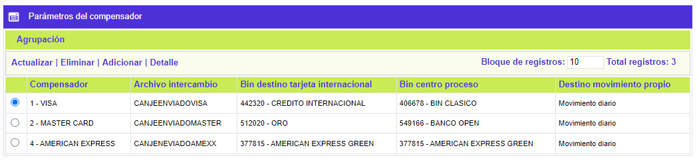
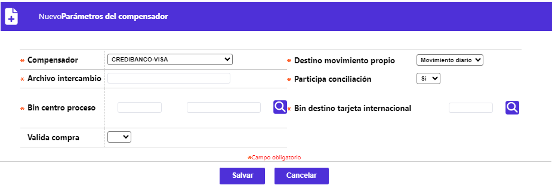
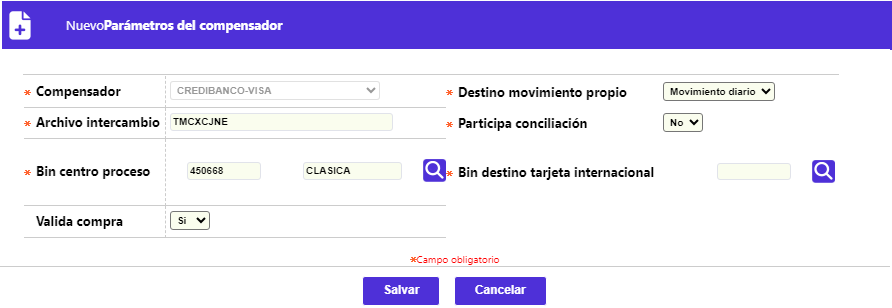
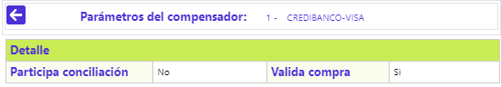
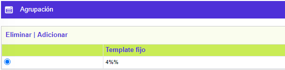

Parámetros de compensadores
A través de este formulario, la entidad puede efectuar el mantenimiento y consulta de la tabla que contiene la parametrización de las condiciones de interacción de la entidad respecto del(os) procesador(es) del movimiento generado desde y hacia la entidad. El formulario contiene los enlaces: Agrupación y Conceptos enviados a intercambio, Actualizar, Eliminar, Adicionar y Detalle.

Adicionar: Al activar ese enlace se despliega el siguiente formulario con los siguientes campos:

Descripción de campos
Compensador |
Campo obligatorio que posee lista de valores tipo combo, en el cual se debe seleccionar el compensador para el cual se están definiendo las condiciones de operación. |
Destino movimiento propio |
Campo obligatorio que posee lista de valores tipo combo, en el cual se debe seleccionar entre: Movimiento diario e Intercambio, el destino del movimiento propio de la entidad. Diario, indica que el movimiento de sus tarjeta habientes propios lo procesa directamente la entidad, mientras que intercambio le indica al sistema que se debe enviar el movimiento al compensador quien lo reprocesa y se lo devuelve a la entidad. |
Archivo de intercambio |
Campo alfanumérico de 30 posiciones, obligatorio, dentro del que se debe registrar el nombre del archivo que contiene el movimiento.. |
Participa conciliación |
Campo obligatorio que posee lista de valores tipo combo, en el cual se debe seleccionar entre: Si o No, el movimiento propio participa en la conciliación entre el canje enviado y recibido. |
Bin centro de proceso |
Campo obligatorio que contiene lista de valores de la cual se selecciona que debe seleccionarse el prefijo que identifica a la entidad ante el procesador, usualmente corresponde al bin de producto Clásica. |
Bin destino tarjeta internacional |
Campo obligatorio, contiene lista de valores, de la que debe seleccionarse el prefijo que centraliza el movimiento generado en el exterior por los tarjetahabientes propios. |
Valida compra |
Campo que posee lista de valores tipo combo, en el cual se debe seleccionar entre: Si o No, el movimiento de compras debe ser validado desde el momento de la captura o se omite; esto se define con base en la forma de operar de algunos compensadores a los cuales se envía el movimiento sin validar y éste lo regresa a la entidad ya validado en el proceso de compensación. |
Actualizar: Al activar ese enlace se despliega el siguiente formulario, en el cual el único campo no modificable es el Compensador. Si el destino del movimiento es 'Intercambio' y en el formulario Agrupación se ha parametrizado algún valor para el compensador, el campo no permite ser modificado, hasta tanto se eliminen los registros asociados.

Detalle: Al activar ese enlace se despliega el siguiente formulario con la información del registro y en el cual ninguno de sus campos es modificable:

Agrupación: Al activar ese enlace se despliega el siguiente formulario, en el cual la entidad puede parametrizar los templates que permiten identificar los bines a los cuales deben pertenecer las tarjetas para que su movimiento sea dirigido al destino seleccionado. El formulario contiene los enlaces: Eliminar y Adicionar:

Adicionar: Al activar ese enlace se despliega un formulario con un único campo:
Descripción de campos
Template fijo |
Campo alfanumérico de 8 posiciones, obligatorio, dentro del que se debe registrar el comodín que permite filtrar el número de la tarjeta, mediante la que se realiza la transacción y en combinación con el bin o prefijo y el compensador, dirigen el movimiento propio como se señala. Se puede ingresar bien sea el número completo del bin o los primeros dígitos por los cuales debe empezar el bin, seguido del símbolo '%'. |